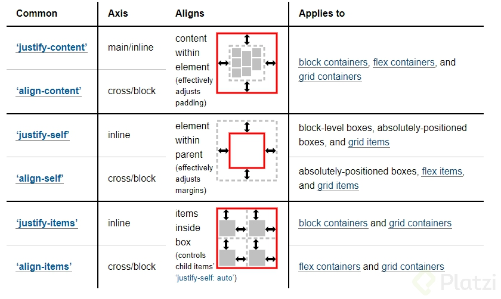

Elementos Inline VS Elementos Block
| Elementos Inline | Elementos block |
|---|---|
| Se posicionan horizontalmeente en linea con otros elementos. Osea uno al lado del otro. | Forman un bloque y se posicionan de forma vertical con un nuevo salto de linea |
| La anchura se define en base al contenido del elemento | La anchura es la mazima que puede tomar dentro dee su elemento contenedor |
| La altura se define en base al contenido del elemento | La altura cambia en base al contenido que posea |
| Solo puede contener elementos de tipo inline. | Puede contener elementos inline y block |
| No se puede aplicar una anchura y altura fijas por medio de CSS | Si se puede aplicar una anchura y altura fijas por medio de Css |
| Algunos ejemplos de elementos inline: a span iframe code input label button | Algunos ejemplos de elementos inline: p h1 al h6 div ul li ol form |
¿display: grid o display: inline-grid?
Ideas/conceptos claves
Display ⇒ Desplegar, colocar a la vista, exhibir, lucir, Mostar, presentar Outer ⇒ Denota cómo se comporta un elemento en relación a los otros Inner ⇒ como se comportan los hijos directos del elementoApuntes
Display ⇒ Define el tipo de visualización de un elemento Valores: Inner Outer Los valores block e inline definen dos cosas Valor externo (Outer) Valor interno (Inner) Cuando usamos display: grid; estamos diciendo display: block grid; Es decir que su comportamiento externo sera de tipo bloque Un elemento que tenga los atributos de bloque puede tener: Margin y padding width height Si pensamos en display: inline-flex; su relación con otros elementos no sera de bloque sino de línea Siempre volvemos al flujo normal del documento RESUMEN: La diferencia entre grid e inline-grid es el comportamiento externo que tienen con otros elementos, usando grid sera de tipo bloque y usando inline-grid sera de tipo inlineComo utilizar correctamente css grid
Es bueno mencionar que css grid layout es una herramienta de css que nos facilita mucho el trabajo de maquetacion aqui te mostrare como ocuaparla correctamente
el siguiente mini diccionario te puede ayudar:
-
display: grid:
selecciona el tipo de display a utilizar en este caso estamos hablando de grid -
grid-template-rows: 20px fr;
este nos dice el tamaño de nuestra fila, y cada que se ponga un dato en ella indica tambien el numero de filas, fr significa fraccion es decir una forma de hacer responsive css grid -
grid-template-columns: 20px ;
este nos dice el tamaño de nuestra columna, y cada que se ponga un dato en ella indica tambien el numero de columna -
grid-template: repeat(5,20px) / repeat(5,20px);
nos ayuda a no escribir tanto siendo el primer numero el numero de filas o columnas respectivamente, y el segundo numero el tamaño de cada una, RECUERDA QUE PRIMERO ES FILA Y DESPUES COLUMNA -
row-gap: 5px;
hace referencia a la separacion entre filas y columnas -
grid-row-gap: 5px;
hace referencia a la separacion entre filas y columnas es lo mismo que el anterior pero es la forma viejita -
gap: 5px 5px;
hece la separacion de filas y columanas, el dato que se la pasa es la distancia entre cada final de fila con el comienzo de la otra. -
grid-template-areas:
"header header header header header"
"header header header header header"
"main main . sidebar sidebar"
"main main . sidebar sidebar"
"footer footer footer footer footer";
esta es una forma de dar el espacio que corresponde a cada parte desde un inicio, con esto es mas facil trabajar
Como alinear en css grid

justify te puede ser de ayuda con estas opciones:
y lo mas importante recuerda cual es cual: